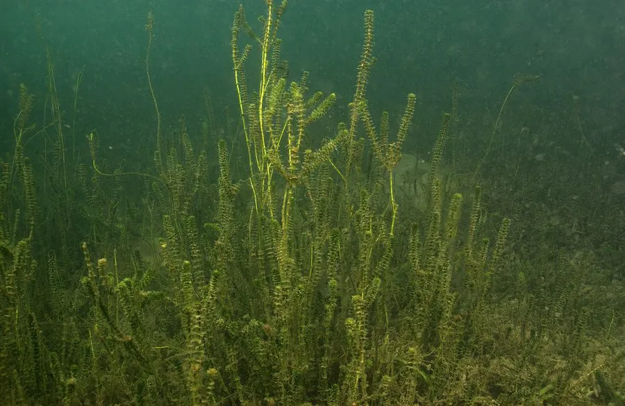

水生植物 · 植物界
轮叶黑藻 Hydrilla verticillata

水鳖科多年生沉水草本，叶片轮生、边缘有齿，生长迅速，是鱼缸水草和河蟹养殖的水草，也被列为入侵种。
- 分类
- 门被子植物门纲木兰纲目泽泻目科水鳖科属黑藻属
- 栖息环境
- 池塘、沟渠、湖泊等静水或缓流水体，喜光、耐污
- 地理分布
- 原产亚洲、非洲与澳大利亚，中国各地常见，北美等地为入侵种
- 保护级别
- 暂无评估；在北美等地为入侵种
物种志
轮叶黑藻为水鳖科黑藻属多年生沉水草本，茎细长，长 1–2 米，多分枝。叶片轮生，每轮 3–8 枚，线形或披针形，长 1–2 厘米，边缘有细锯齿，深绿色。花小，单性，雌雄异株，生于叶腋，花期 6–9 月；果实为线形蒴果，种子黑色。
轮叶黑藻原产亚洲、非洲和澳大利亚的淡水水域，中国各地池塘、沟渠和湖泊常见，喜温暖、阳光充足的水体，靠断枝和休眠芽繁殖，生长速度很快。它是河蟹养殖中重要的水草，可为蟹提供栖息、蜕壳场所和植物性饵料，也是水族箱常见的沉水植物；同时它被引入北美后大量繁殖，堵塞航道和灌溉设施，被列为世界百大入侵种之一。
形态与习性
- 株高茎长 1–2 米，多分枝
- 花期6–9 月，花小，单性
- 果期8–10 月，线形蒴果
- 光照喜充足阳光
- 水分沉水生长，适宜水深 50–200 厘米
- 土壤塘泥底质，也能漂浮生长
- 繁殖断枝扦插与休眠芽繁殖
- 主要用途河蟹养殖水草、水族箱水草、饲料
趣味知识
- 轮叶黑藻叶片轮生且边缘有细锯齿，是识别它的主要特征。
- 它靠断枝和休眠芽繁殖，一段茎枝就能长成新植株。
- 轮叶黑藻是河蟹养殖中的重要水草，为蟹提供栖息和蜕壳场所。
- 被引入北美后大量繁殖、堵塞航道，被列为世界百大入侵种之一。